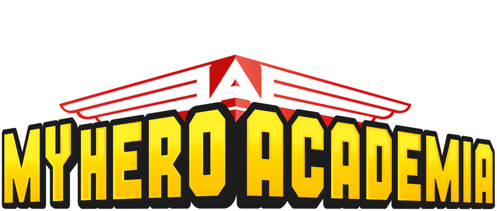

Anime Qcm
Ceci est un QCM sur Tokyo Ghoul !
Connaissez-vous Tokyo Goul sur le bout des doigts ?
A vous de jouer pour avoir 10/10 :D .
Pour n'avoir aucun spoil, vous n'aurez pas les réponses a la fin du quizz.
Commencez le test maintenant !
Qui est ce personnage ?
Kaneki Ken
Amon Kôtarô
Kirishima Ayato
Kaneki Uta
Que lui arrive-t-il au début ?
Il se fait injecter un produit
Il tombe de haut
il se fait croquer par une ghoul
il se fait opérer
Que devient-il à cause de cela ?
Un Robot
Une Ghoul
Il meurt
Un humain avec des pouvoirs
Quelle est sa particularité
Il est borgne
il a qu'un bras
il a perdu le toucher
il a perdu l'odorat
Comment se nomme le café qui le recueille après sa transformation
Aogiri
Le CCG
L'Antique
Onigiri
Après le décès de Kureo Mado, un membre de sa famille rejoint le CCG. Mais qui est ce membre ?
Sa femme
Sa sœur
Sa fille
Sa nièce
Quelle goule trouve que Kaneki a un goût délicieux et voudrait le manger ?
Tsukiyama Shu
Itori
Shakimi
Kirishima Uta
De quel arrondissement Kaneki est-il originaire ?
Le 11e
Le 20e
Le 4e
Le 15e
Qui a torturé Kaneki dans une pièce ?
Yomo Renji
Lize
Le gourmet
Jason, pour ne pas perdre la raison.
Qui est la Chouette et le chef d'Aogiri ?
Yoshimura (Tensho)
Yomo Renji
Kotaro Amon
Jason
